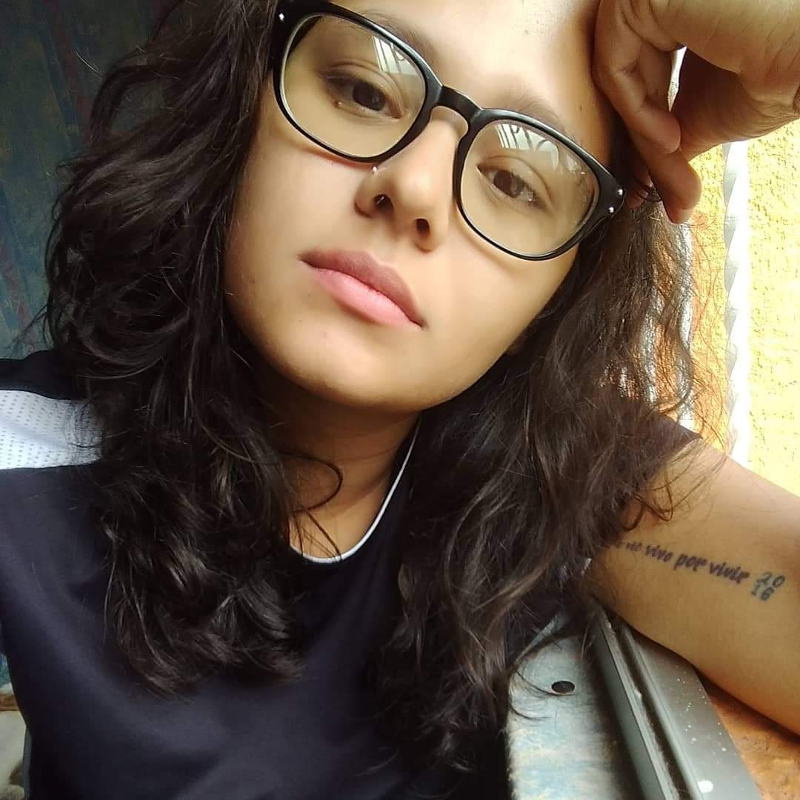

Polyamory: consent, honesty and communication
Poly-amory literally means many-loves. People who desire or have multiple ongoing intimate relationships, whether sexual or romantic, with the knowledge and consent of everyone involved. Polyamorists want to have deeper connections with multiple people, through love, affection, sex, honesty and communication.
"I am polyamorist by orientation, meaning that it’s directly correlated with who I am and how I move through the world. It is also connected to my need to decolonize my body, thoughts and ways of being. For me, ethical non-monogamy or Polyamory is directly dismantling the patriarchy. Queerness and white supremacy are direct opposites in how they function in my life. This supports my desire for expansion in this lifetime. Having multiple intimate, romantic and loving relationships helps me to sharpen my communication skills, learn and address where my blind spots are, and pushes my capacity for compassion, empathy and love. Love in many forms is the perfect definition. For me, love is abundant in my life and in conjunctions, in conversation with the universe. My being non monogamous is a continuing conversation with myself, how I spread love, intimate relationships, and the freedom that comes without the confine of the western ideals of monogamy and heteronormativity. Also, the word intimate is mostly faceted because it is not limited to sex. I think sex is just a miniscule part of intimacy, and because people limit intimacy to those who are sexually involved with, it stunts the expansion of how we can connect and express ourselves as humans. I just want to feel free in my expression of love outside of any binary, including the ones we have learned about how we should exist in relationships. I also now that how I show up in the world in all of my identities, with that elevated expression of love, is a radical act. It is what I call liberation." -Jerrie Johnson